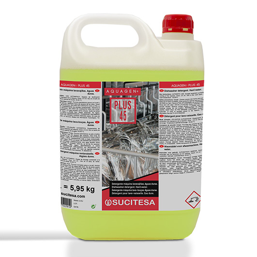
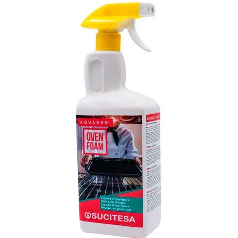

Aquagen Plus 45
Detergente para máquina lava-louça
Aplicação: lavagem automática de louça em águas duras.
Benefícios: ação desengordurante elevada, efeito tira-nódoas e prevenção de incrustações calcárias.
Pedir Informação
Aquagen Oven Foam
Espuma desengordurante para fornos e chapas
Aplicação: remoção de gordura e sujidade queimada em superfícies de cozinha profissional.
Benefícios: espuma consistente, ação prolongada e limpeza eficaz sem salpicos nem vapores.
Pedir Informação
Aquagen Bionet
Desinfetante de superfícies
Aplicação: desinfeção de superfícies laváveis em ambientes profissionais.
Benefícios: ação bactericida, fungicida e virucida, com uso seguro em superfícies laváveis.
Pedir Informação
Aquagen Top
Detergente manual lava-louça
Aplicação: lavagem manual de louça, talheres, vidros e utensílios em cozinhas profissionais.
Benefícios: elevado poder desengordurante, espuma estável e fórmula dermoprotetora com ação suave para a pele.
Pedir Informação
Aquagen Supra 45
Abrilhantador para máquina lava-louça
Aplicação: fase de enxaguamento final em máquinas de lavar louça, especialmente em águas duras.
Benefícios: secagem rápida e uniforme, brilho sem manchas e redução de marcas de água.
Pedir Informação
Aquagen Power Quat
Desinfetante de amplo espetro
Aplicação: desinfeção de pavimentos e superfícies laváveis em ambientes profissionais.
Benefícios: ação bactericida, fungicida e virucida; limpa e desinfeta sem perfume, adequado para zonas com exigência higiénica elevada.
Pedir Informação
Aquagen DV
Lixívia de qualidade alimentar
Aplicação: hipoclorito de sódio com 55 g/l de cloro ativo (à saída de fábrica), indicado para a desinfeção de água potável.
Benefícios: elimina microrganismos patogénicos e garante ótimas condições higiénicas.
Pedir Informação